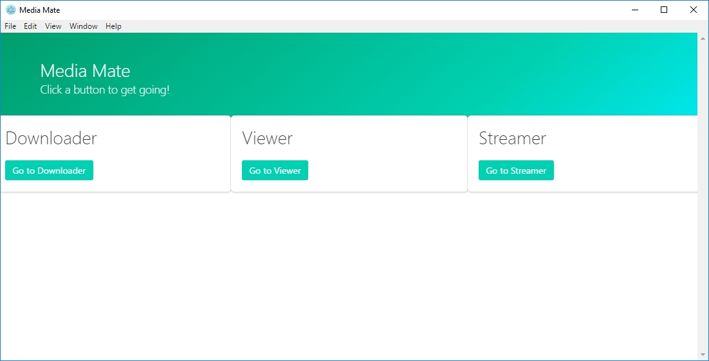

The problem currently with media centres is that to make one, you need to go through all sorts of setup, which is time consuming and mentally draining.
Another big problem with media centres, is that you need to have many programs running at the same time, wasting precious system resources.
To give you an example of what I mean - I have a media centre myself. I have to use Sonarr, Plex, Transmission and Couchpotato for what seems like a simple job.
With such a large amount of information from so many sources, it becomes difficult to keep on top of it all.
Leisure time should be, as the name suggests, easy. I aim to provide a solution to this information overload with a focus on the particular area of media (TV, movies, music etc).
I chose this problem because it is one that has plagued me for many years. I used to work around it by using a virtual machine, and only booting it when I needed to. This is very inefficient, as you have to think about it constantly, wondering if there is something to download / watch.
Instead of having to run 5 different programs, why not run one that does everything those 5 programs which I mentioned earlier do. The result will be an well organised, easy to set up media centre.
The user will interact with the program by interacting with UI elements such as buttons, links, video controls, etc. Below is a UI draft of the start page.
